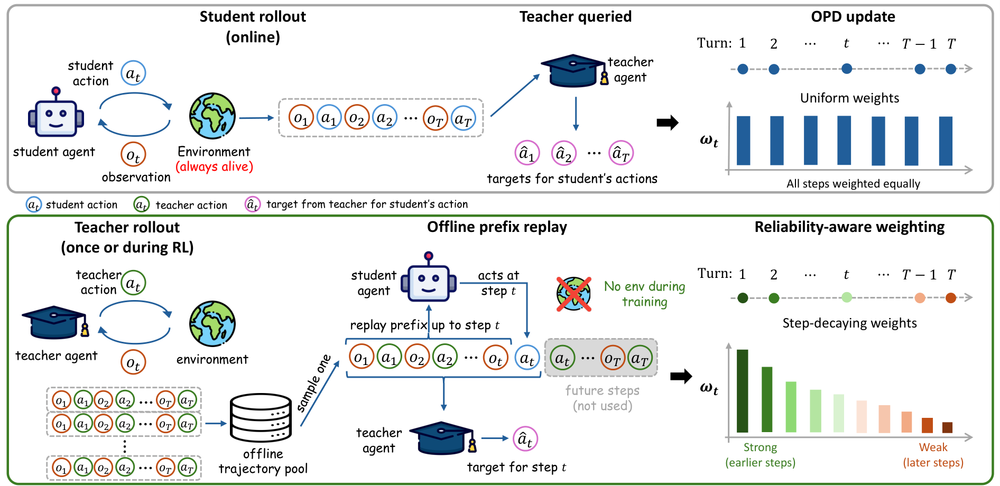
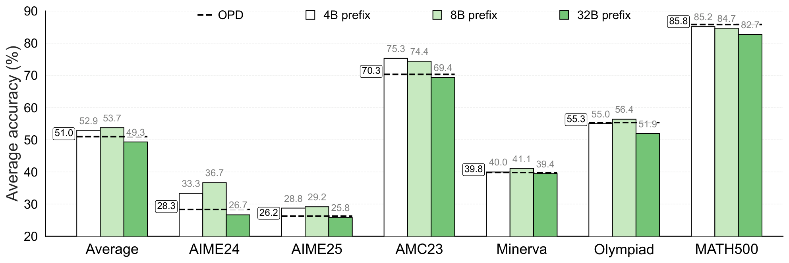
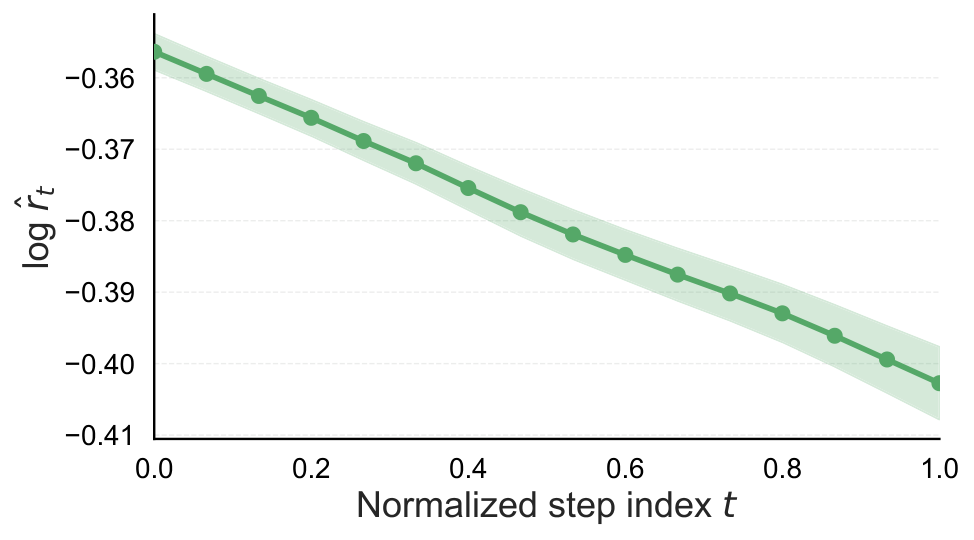
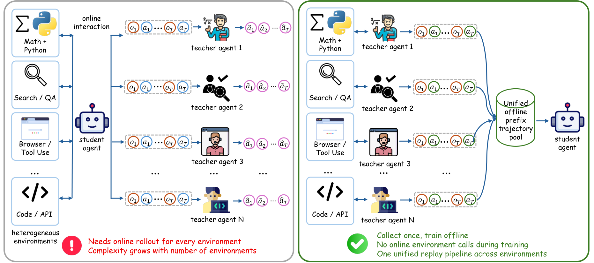
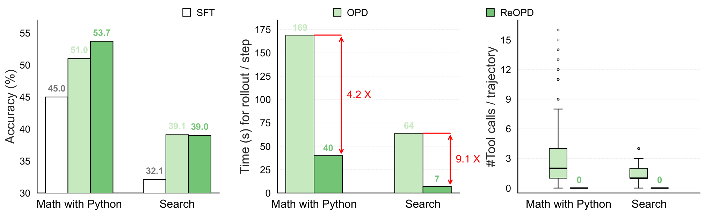
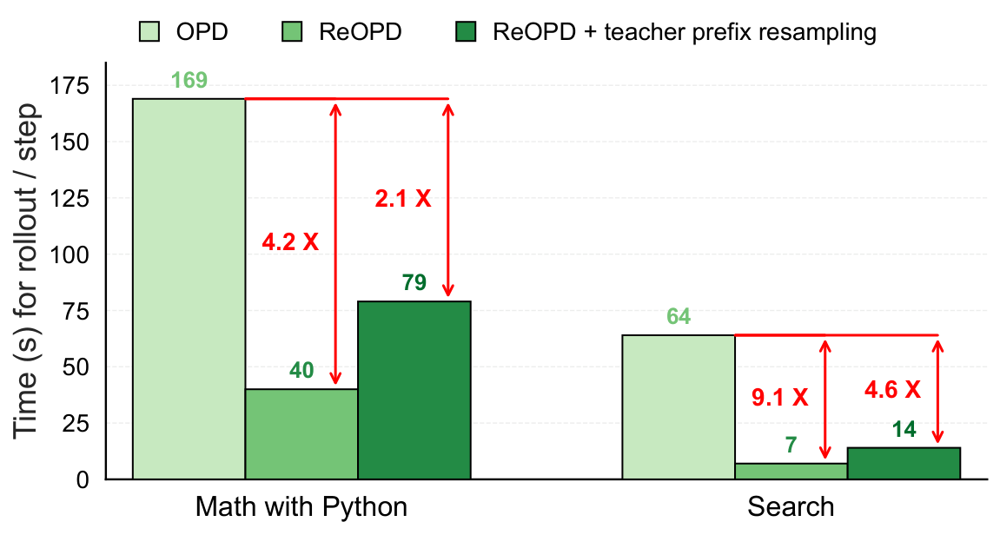
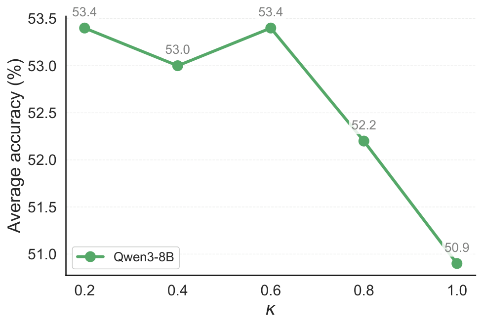
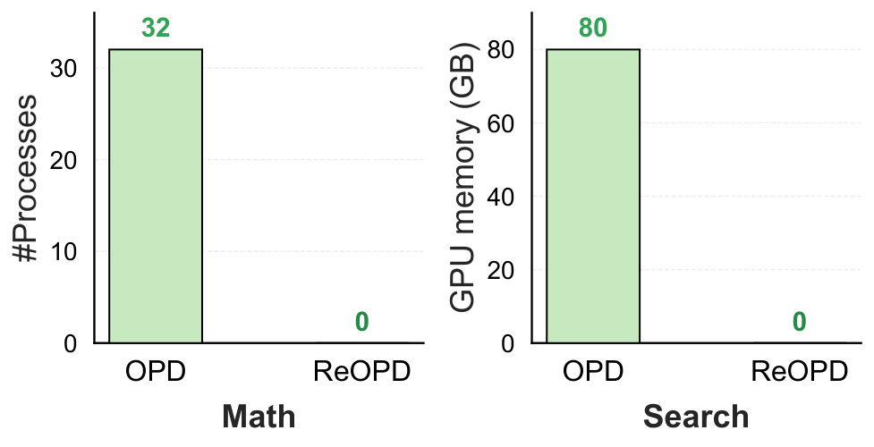
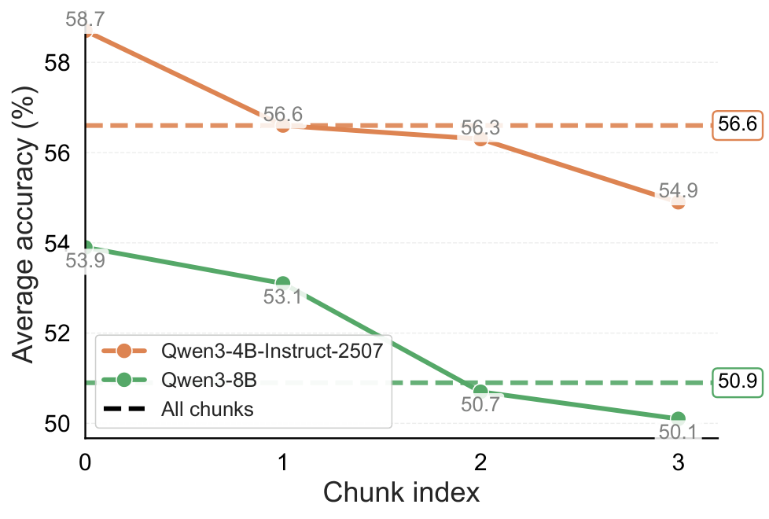

知识蒸馏是让小模型（student）学习大模型（teacher）能力的有效方法。但在多轮交互式Agent任务中，Online On-Policy Distillation（OPD）面临一个棘手问题：每次更新都需要student在与环境实时交互的同时生成完整轨迹，teacher再对这些轨迹进行标注：环境必须始终在线，成本极高。
ReOPD（Replayed-Prefix On-Policy Distillation）提出了一种简洁的解决方案：从预收集的teacher轨迹池中取一段前缀，student只在该前缀上生成下一步动作，teacher提供该步的监督信号。环境只需在收集teacher数据时存在，student训练时完全离线。在数学推理、搜索、多环境三个场景中，ReOPD在匹配或超越全在线OPD的同时，将环境成本降至零。
在多轮交互式环境中，Agent在与环境交互时产生多步决策历史Ht=(O1,A1,O2,A2,…,At−1,Ot)。OPD要求student在每个更新步重新与环境交互，生成完整轨迹后teacher再标注：环境必须持续运行，student需要多次环境调用。
ReOPD的核心想法是：不再让student每次都从头与环境交互，而是从预收集的teacher轨迹中取一段前缀作为上下文，student只前向推理一步，teacher提供该步的蒸馏目标。下图展示了在线OPD与ReOPD的对比：

ReOPD将多轮OPD简化为一个设计选择：在每个步骤t，选择一个有效的「前缀分布」πt，在student相关性和teacher可靠性之间取得平衡。
对于监督步骤t，前缀ht=(O1,A1,…,Ot) 取自预收集的teacher轨迹：每一步动作和观察都是teacher的记录。在该前缀上，student生成自己的动作，teacher的记录条件概率 πT(·|x,ht) 提供蒸馏目标。遍历轨迹中的所有t即覆盖所有位置。
ReOPD的分析识别出多轮OPD中的两个误差层：时间层（累积误差，由分布偏移引起）和分布层（student与teacher之间的双向偏移）。ReOPD通过前缀重放同时缓解了这两层误差。


随着环境数量增加，在线OPD的操作复杂度呈线性增长，因为每个环境都需要独立部署。ReOPD不需要同时部署所有环境：teacher的轨迹可以针对不同环境分别收集，student训练时统一使用这些预收集轨迹。
下图展示了多环境场景下ReOPD与在线OPD的扩展性对比：

在三个Agent任务上的实验结果显示：ReOPD在所有指标上匹配或超越全在线OPD。
数学推理：ReOPD在准确率上达到与在线OPD相当的水平，但训练时间大幅缩短，因为student不需要重复与环境交互。
搜索任务：在需要多步工具调用的搜索场景中，ReOPD表现出更强的稳定性，证明了前缀重放策略在复杂Agent任务中的有效性。
多环境扩展：随着环境数量增加，ReOPD保持了稳定的性能，而在线OPD的部署成本线性增长。


ReOPD的效率优势体现在多个维度。下图1展示了前缀重放过程中的权重比率分布，说明不同前缀位置的贡献差异。下图2展示了处理过程中的内存占用，ReOPD的离线训练特性使其内存需求远低于在线OPD。


ReOPD在实际实现中通过chunk index机制支持多前缀拼接。每个训练样本包含多个来自不同teacher轨迹的前缀段，student需要在每个前缀段上生成动作。下图展示了chunk index的编码方式：

参考：https://arxiv.org/abs/2607.04763